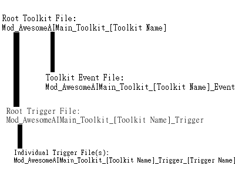
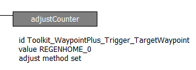

AwesomeAI 101
Pre-requisites
You must have:
- AwesomeAI
- Awesomenauts
- Basic reading comprehension and patience
- Don't blame me for stupid shit
Step Zero: Let Go of Your Earthly Tether
This guide involves logic written by me! It's not really easily possible for me to harm your computer using the limited scripting language Awesomenauts provides, but by using my software you waive me of any
responsibility for damages incurred by using said software. If you disagree with this, please stop using AwesomeAI and close this webpage. Thanks!
Step One: Extract AwesomeAI
In order to use AwesomeAI, you must extract it to the working directory for AIs. Simply extract the contents of one of the zipped releases to your BehavioursCustom directory
(typically "C:\Program Files (x86)\Steam\SteamApps\common\Awesomenauts\Data\BehavioursCustom" on Windows)
Step Two: Cleanup
AwesomeAI comes packed with some fluff that's not really necessary, or even detrimental to making your own AI. These files are usually included as a convenience to me (the writer),
and won't be included in final releases at all. The following files/directories can be safely deleted:
- .gitignore -- This is a file used by git. It can be safely deleted and serves no purpose
- ApplicationBehaviourCreator.log -- Autogenerated by the behaviour creator. It can be safely deleted and serves no purpose
- LICENSE -- Autogenerated by github. This is the license that AwesomeAI is distributed under (Apache Commons). Essentially, you can do whatever you want with my logic so long as derivative works also have the license in them. HOWEVER, I will never actually enforce this license really. If you hate "the system" or something, go nuts and delete it.
- Mod_Cowboy_AwesomeAIDemo.xml -- A sanple AI demonstrating how to load and run AwesomeAI. Unless you want a really dumb bot spawning in all your games, your should rename or delete this AI file, though, you should probably keep it on hand for reference
- Mod_AwesomeAIMain_Toolkit_Companion* -- This Toolkit is included as an example of a basic AI for those looking for a more advanced example to work with. No files depend on this Toolkit by default, so it's safe to delete or move if you don't want it. Make sure not to load this in the Main AwesomeAI file at all if you are removing it
Step Three: Getting Started With Making an AI file
Like GeneralAI, AwesomeAI needs to be loaded using a executeBehaviourTree block. This block should be loaded at the top of your AI file for best results.
The main file to load is called Mod_AwesomeAIMain. For a demonstration, load up Mod_Cowboy_AwesomeAIDemo in the editor.
Once prepared, you can start calling the functionality built into AwesomeAI!
Step Four: Understanding The Functionality Built Into AwesomeAI
AwesomeAI is structured with two major types of files: Triggers and Events (Other minor file types exist!). These Triggers and Events are bundled into Toolkits.
The file structure looks like this:

All Toolkits have a Toolkit root file, but not all Toolkits have both an Event file and a root Trigger file. Many Toolkits only exist to gather information, and only need an Event file (like the Ticker Toolkit),
while others only exist to carry out basic functions, and only need the root Trigger and Trigger files (like the Attack Toolkit).
The Toolkit root file is responsible for loading the Trigger root file and the event file, while also announcing that the Toolkit has been loaded. Contributors to the toolkit and special notes should be
commented to the root block of this file.
The Trigger root file is responsible for mapping Booleans and Counters to packages of behaviour called Triggers. The names of the Booleans or Counters are directly connected to the name of the Trigger files
for ease of use. For example, the Boolean "Toolkit_Movement_Trigger_MoveLeft" is mapped to the Trigger file "Mod_AwesomeAIMain_Toolkit_Movement_Trigger_MoveLeft". By enabling the Boolean, the Trigger file is subsequently activated.
Booleans are usually used for simple Triggers, while Counters are used for Triggers that need to accept more information (like the WaypointPlus Toolkit's TargetWayoint Trigger), often, when a counter is employed,
enumerators are used to represent information instead of raw numbers. For example, WaypointPlus Toolkit's TargetWaypoint Trigger can be activated by passing a number representing a node. However, there are 80+
unique nodes in-game, so referring to them using numbers alone becomes impractical! Instead, enumerators representing each node are created under the Constants Toolkit's Event file and then used to represent that node
whenever possible. See the Mod_Cowboy_AwesomeAIDemo file for an example
Trigger files are just bundles of behaviour which "do something". An example would be "Move Left" which would be stored in a file with a name which loosely describes the behaviour.
Triggers reset to a non-active state every tick, meaning that a Trigger needs to be "held down" to continue for more than just a single tick. While seemingly obtuse at first, this system allows for much less
error-prone logic and streamlines the AI making process. This system creates a contract that puts the ability to terminate any given logic on the modder's terms. Certain Trigger files may abstract lower-level
Triggers, like the the Movement Toolkit's MoveForward Trigger, which makes use of the MoveUp/MoveDown/MoveLeft/MoveRight Triggers; this allows for more flexible modding, because the behaviour of MoveForward
can be indirectly modified by Modifying MoveUp (This specific scenario allows for changing jump behaviour on a per-naut basis without needing to modify more than a single file!). Trigger files often employ
internal variables to keep track of settings, like BackwardsAASpeed in the Attack Toolkit's AutoAttack Trigger; these variables do not reset like triggers and usually are handled automatically by Triggers.
Occasionally, however, Triggers leave certain internal variables to be set by the modder. These types of variables will usually be mentioned whenever possible in the documentation
The Event file is a bundle of behaviours which constantly output information about the bot and the world around it. Events "do nothing". Events should only change information internally and make use of
only blocks that do not affect how the bot behaves. For example, the Ticker Toolkit's Event file only updates timekeeping information for other Toolkits to make use of, but does not actually directly affect
the way the bot behaves.
As a quick aside, the naming structure leaves a space between "Mod_" and "Toolkit" for the name of the author, group, or overarching project that created the file. For all files included with AwesomeAI,
that space contains "AwesomeAIMain". When making your own AI, you should avoid putting "AwesomeAIMain" in this space and instead use your own style
Step Five: Understanding the included Toolkits
A Toolkit is effectively a modular bundle of related behaviours designed to be added onto AwesomeAI. Some Toolkits may depend on the inclusion of other Toolkits. For example,
most of the Toolkits included with AwesomeAI depend upon the Ticker Toolkit, which provides a universal measure for timekeeping.
Index of included toolkits:
-
Attack -- Handles mapping the basic attack functions
Triggers:
- AutoAttack -- (Boolean) Handles using the autoattack (LMB by default). Also handles reverse autoattacking automatically with 3 settings (Toolkit_Attack_Trigger_BackwardsAASpeed)
- Primary -- (Boolean) Handles using the primary skill (RMB by default).
- Secondary -- (Boolean) Handles using the secondary skill (MMB by default).
No Events
-
Companion -- An example AI. This serves as a sort of demo for beginners to reference. No AIs depend on this and it can be safely deleted
Triggers:
- Clingy -- (Boolean) Used to activate the Companion Toolkit. So long as this trigger is active, the Companion Toolkit will handle most of AwesomeAI functions
No Events
-
Constants -- Handles the creation of Counters and Booleans which only need to be set, never edited. Constants stored here often break naming conventions for the sake of convenience.
For example, the constant representing the AboveBase_0 node is named ABOVEBASE_0 instead of Toolkit_Constants_Event_ABOVEBASE_0 because modders will often need to work with nodes.
Many constants are named using all caps because the Awesomenauts scripting language is not sensitive to capital letters. You can refer to any Counter or Boolean with any combination
of capital letters safely
No Triggers
Events:
- Math Constants -- (Counters) Contains commonly used numbers for math operations
- Node Constants -- (Counters) Contains enumerators representing nodes
- Path Constants -- (Counters) Contains enumerators representing custom paths
-
Detection -- Handles detection of things "on-screen". This includes handling health, named areas, walls, etc.
No Triggers
Events:
- Area* -- (Booleans) True when in the described area
- Target*(distance) -- (Booleans) True when the target is in the described distance range
- Self* -- (Booleans) True when in the described health range
- Target*(health) -- (Booleans) True when the target is in the described health range
- WallAt* -- (Booleans) True when a wall is in the specified area (~ is used in place of -)
- TargetAtLeft/Right -- (Booleans) True when the target is at the specified sides. Neither will be true when directly above or below
- BlockerType -- (Counter) Tells what's directly in front of the bot. 0 - None 1 - Enemy Awesomenaut 2 - Enemy Droid 3 - Neutral Critter -1 - Unknown
- OnPlatform -- (Boolean) True when standing on top of a glass platform
- CornerStuckTicks -- (Counter) Represents the number of ticks heuristics has detected the bot is stuck in a corner
- Gold -- (Counter) Represents the amount of spendable solar the bot has. Increases in increments of 10 and caps out at 1500
-
MapInfo -- Handles detection of things that exist at fixed points on the map. This includes turrets and the map itself
No Triggers
Events:
- CurrentMap -- (Counter) Indicates current map. 0: Ribbit IV 1: AIStation 404 2: Sorona 3: Aiguillon 4: AIStation 205 NOTE: Does not update until the bot goes to the shop for the first time
- Turret* -- (Booleans) Set of events indicating the status (dead or alive) of the corresponding turret. First digit represents turret team (1 = red, 2 = blue). Second digit represents turret location (0 = Top Back, 1 = Bottom Back, 2 = Top Front, 3 = Bottom Front). The Bottom Back turrets do not exist on Sorona, so Turret11 and Turret21 are always false on Sorona. The Top Front turrets don't exist on AI Station 404, so Turret12 an Turret22 are always false on AI Station 404.
-
Movement -- Handles basic movement with various layers of abstraction
Triggers:
- MoveDown -- (Boolean) Handles moving down (through platforms), essentially just mapping the physical button to a trigger
- MoveLeft -- (Boolean) Handles moving left, essentially just mapping the physical button to a trigger
- MoveRight -- (Boolean) Identical to the MoveLeft trigger, except for moving right
- MoveUp -- (Boolean) Handles moving up (jumping), the most complex basic movement trigger. Gracefully handles shorthops, and multijumps. Single tick triggers for shorthops, simply hold trigger indefinitely to jump continuously
- Teleport -- (Boolean) Handles teleporting, mostly just a mapping, but also handles teleport interrupts from damage gracefully
- MoveForward -- (Boolean) Makes use of MoveUp/Down/Left/Right to move "forward". Forward meaning towards the enemy spawn (not base). Will attempt to jump over obstacles
- MoveBackward -- (Boolean) Identical to MoveForward, but towards the friendly spawn
- MoveTowardsTarget -- (Boolean) Makes use of MoveUp/Down and MoveForward/Backward Triggers to move towards the target
- MoveAwayFromTarget -- (Boolean) Identical to MoveTowardsTarget, but to move away from the target
- FootsyTargetClose -- (Boolean) Makes use of Move(Towards/AwayFrom)Target to "dance" a very close range relative to the target (melee distance)
- FootsyTargetMedium -- (Boolean) Identical to FootsyTargetClose/Far, except at a medium range (outside of Skolldir's melee range)
- FootsyTargetFar -- (Boolean) Identical to FootsyTargetClose/Medium, except at a far range (about 3/4 screen-width)
- In order of abstraction: MoveUp/Down/Left/Right/Teleport family -> MoveForward/Backward family -> Move(Towards/AwayFrom)Target family -> FootsyClose/Medium/Far family
No Events
-
Pathfinding -- Handles node-based movement
Triggers:
- MoveTowardNextNode -- (Boolean) Makes use of MoveUp/Down and MoveForward/Backward. Handles navigating towards the target node. This trigger can be used in conjunction with WaypointPlus or as a standalone. Functions very similarly to GeneralAI's implementation of node logic
No Events
-
Ticker -- Handles timekeeping in "ticks" one tick represents one cycle of the behaviour tree (roughly .1 seconds). Should be used over the Timer block whenever possible due to Timer's inconsistencies in encapsulated logic.
No Triggers
Events:
- Ticks -- (Counter) Represents the current cycle the AI is on. An increase in 1 represents one more cycle of the behaviour tree. A tick is roughly equivalent to .1 seconds
- *TickFromNow -- (Counters) Used to conveniently get the index of a tick from the future. Example: if Ticks is currently 15, 20TickFromNow would be 35
- *TickAgo -- (Counters) Similar to *TickFromNow Event family, but for ticks from the past
- *nd/3rd/*thTick -- (Counters) Fires in set intervals. Example: 5thTick returns true once every 5 ticks (0th tick, 5th tick, 10th tick, ...). These Events are useful for optimizing logic that doesn't necessarily need to run every tick
-
WaypointPlus -- Handles advanced locational awareness and custom pathing. Uses unusual tree structures that break convention for the sake of extensibility, this file is a bad example of how to make an AwesomeAI toolkit.
Triggers:
- PathLoader -- (Counter - Expects Enumerator) Handles the execution of custom paths. Custom paths are stored in their own seperate type of file with the syntax Mod_[Author/Organization]_Toolkit_[Toolkit Name]_Path_[Path Name]
For example, the sample path file included uses the name "Mod_AwesomeAIMain_Toolkit_WaypointPlus_Path_Sample". However, in the future, another toolkit may come with path files, so then that path file would come with a different Toolkit denoter.
Expects enumerators from the Path enumerator section of the Constants Toolkit Event file. For more info, please visit the WaypointPlus specific section
- TargetWaypoint -- (Counter - Expects Enumerator) Handles advanced targeting of nodes. AIs should use this trigger for setting waypoints instead of the selectDestWaypoint block, as this toolkit provides additional features over the selectDestWaypoint block
And using the selectDestWaypoint block directly can break TargetWaypoint. Expects enumerators from the waypoint enumerator section of the Constants Toolkit Event file. For more info, please visit the WaypointPlus specific section
Events:
- LastCheckpoint -- (Counter - Uses Enumerator) Represents the last node reached as a counter. Updates whenever a new named node is reached under all circumstances without error. Uses enumerators from the waypoint enumerator section of the Constants Toolkit Event file.
- AtTargetWaypoint -- (Boolean) True when the bot has reached the current targeted node. When used in conjunction with PathLoader, should only be true for a single tick unless at the last node in the path
- AtTargetWaypointOnce -- (Boolean) True when the bot has reached the current targetted node, but only for the first tick
- AtTargetWaypointIdle -- (Boolean) True when the bot has reached the current targetted node, but only after the first tick
Working with WaypointPlus
WaypointPlus's primary function is to act as a wrapper for the in-built waypoint targetting system provided by blocks like selectTargetWaypoint and isAtTargetWaypoint. On it's own, this does very little to improve navigation logic, however,
when combined with a few clever tricks, this system can be leveraged to add features which would otherwise be challenging or impossible to implement; like instant caveat-free node-based locational awareness and custom pathing.
WaypointPlus uses whole numbers like 1,2,3,4,... to represent nodes (for example, ABOVEBASE_0 is 1). Obviously, using raw numbers to represent nodes would be annoying and painstaking, so, instead,
Counters are declared that map the name to the number, so, in the case of ABOVEBASE_0, a counter with id: ABOVEBASE_0 is created with a value of 1. So, whenever a trigger expects a Counter to represent a waypoint, you can instead
just provide an enumerator. Each in-game waypoint is represented with an enumerator that is identical in name to it, so, in almost every case, you can just write the name of the waypoint into the value field like so:

Aside: counters are CaSE iNSEnsItivE, so you can use whichever capitalization format you find most aesthetically pleasing.
Aside 2: a minor limitation of WaypointPlus is that it will not allow navigating to most nodes without first identifying the map. The MapInfo toolkit can only identify the current map by first having the AI visit one of the REGENHOME nodes.
In summary, you'll always need to visit the REGENHOME node first before doing anything else. This restriction breaks random spawn locations in custom games and is mostly a result of
WaypointPlus also has a custom path system that allows for creating complex and scripted movement along named nodes. The system does have limitations however, and can never be used to navigate along illegal paths (like flier only paths with non-flier characters).
In order to create your own custom path, you'll first need to create a custom path file with the following syntax: Mod_[Author/Organization]_Toolkit_[Toolkit Name]_Path_[Path Name] , preferably as a copy of the included "Mod_AwesomeAIMain_Toolkit_WaypointPlus_Path_Sample" file.
Once created, follow the sample file's basic schema to write your own custom path. When you finish, you'll need to map your Path file to an enumerator to make it usable by the PathLoader trigger. To do this, first create an enumerator that represents the path file in the
Event file of the Constants Toolkit (the sample path file has an enumerator as an example). Then, map this enumerator to your file in the WaypointPlus Toolkit's PathLoader Trigger (the specific section for this has the comment "Put new custom paths here" and has the sample path mapped as an example)
Buildingblocks for your first AI
When you first download AwesomeAI, most toolkit files should work out of the box, however, the following toolkits may need adjusting to get them to work well with your bot, depending on the class:
- Toolkit_Movement_Trigger_MoveUp -- By default, configured for lonestar (should work for any character with multiple uniform jumps, won't work so well for fliers, floaters, and mini-multijumpers).
Once you've configured all necessary files, you're ready to mod! Take note, there's no equivalent of the state system from GeneralAI, so you'll need to build your bot from the ground up when it comes to behaviour.
For some insight into how to achieve this, please look at the Companion Toolkit's Clingy trigger.
More Projects/Guides
Home
If you encounter any problems or mistakes, please send me a message at chaorace@gmail.com !